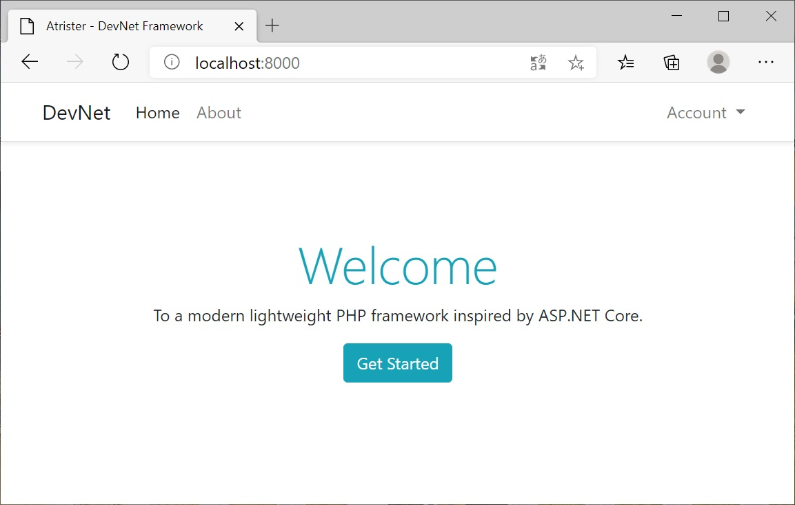

Web Application
To create a Web Application, Open the terminal and navigate to your Devnet project then enter the following command:
devnet new web
Project structure
Devnet SDK command creates a web project with the following structure:
devnet-project/
├─ Controllers/
│ ├─ HomeController.php
│ └─ AccountController.php
├─ Views/
│ ├─ account/
│ │ ├─ index.phtml
│ │ ├─ login.phtml
│ │ └─ register.phtml
│ ├─ home/
│ │ └─ index.phtml
│ └─ layouts/
│ ├─ layout.phtml
│ └─ navbar.phtml
├─ webroot/
│ ├─ css/
│ ├─ js/
│ ├─ lib/
│ ├─ .htaccess
│ ├─ index.php
│ └─ Web.config
├─ ...
├─ Program.php
├─ Startup.php
└─ settings.json
Main class
The DevNet web template generate Program class with main method calls createWebHostBuilder(array $args) method to create and configure a WebHostBuilder object which use startup class, to configure services and the app's request pipeline, then runs the application, as shown in the code below :
<?php
namespace Application;
use Artister\DevNet\Hosting\WebHost;
use Artister\DevNet\Hosting\IWebHostBuilder;
class Program
{
public static function main(array $args = [])
{
self::createWebHostBuilder($args)->build()->run();
}
public static function createWebHostBuilder(array $args) : IWebHostBuilder
{
return WebHost::createBuilder($args)
->useStartup(Startup::class);
}
}
Startup class
As shown in the code below The Startup class includes :
- Configuration property : to read configuration data from "settings.json" with easy navigation inside the tree.
- ConfigureServices method : to configure the app's services which are registred in
IServiceCollectioncontainer and consumed across the app via dependency injection. - Configure method : to create the app's request processing pipeline, through a chain of middlewares untile reach the endpoint middleware where the routes are maped then invoke the action of the matched route
<?php
namespace Application;
use Artister\DevNet\Configuration\IConfiguration;
use Artister\DevNet\Dependency\IServiceCollection;
use Artister\DevNet\Dispatcher\IApplicationBuilder;
use Artister\DevNet\Extensions\DependencyExtensions;
use Artister\DevNet\Extensions\HostingExtensions;
class Startup
{
private IConfiguration $Configuration;
public function __construct(IConfiguration $configuration)
{
$this->Configuration = $configuration;
}
public function configureServices(IServiceCollection $services)
{
$services->addMvc();
$services->addAuthentication();
$services->addAuthorisation();
}
public function configure(IApplicationBuilder $app)
{
$app->UseExceptionHandler();
$app->useRouter();
$app->useAuthentication();
$app->useAuthorization();
$app->useEndpoint(function($routes) {
$routes->mapRoute("default", "{controller=Home}/{action=Index}/{id?}");
});
}
}
Apache configuration
The index.php and .htaccess files must be in the same public directory: ./webroot
The .htaccess file should contain the following code:
RewriteEngine On
RewriteCond %{REQUEST_FILENAME} !-f
RewriteCond %{REQUEST_FILENAME} !-d
RewriteRule ^ index.php [QSA,L]
IIS configuration
The index.php and Web.config files must be in the same public directory: ./webroot
The Web.config file should contain the following code:
<?xml version="1.0" encoding="UTF-8"?>
<configuration>
<system.webServer>
<rewrite>
<rules>
<rule name="slim" patternSyntax="Wildcard">
<match url="*" />
<conditions>
<add input="{REQUEST_FILENAME}" matchType="IsFile" negate="true" />
<add input="{REQUEST_FILENAME}" matchType="IsDirectory" negate="true" />
</conditions>
<action type="Rewrite" url="index.php" />
</rule>
</rules>
</rewrite>
</system.webServer>
</configuration>
Development Server
DevNet framework use PHP Built-in development server, as default server to run the DevNet web application, assuming ./webroot/ is public accessible directory with index.php file, you can start the development server by running the following command in the terminal:
devnet run
This will start the development server at http://localhost:8000
devnet run
[Sat Dec 12 15:10:02 2020] PHP 8.0.0 Development Server (http://localhost:8000) started
if you want to start the server with diffrent port, you can add the option --port followed by the port number:
devnet run --port 5000
Otherwize you can also start the Built-in PHP server, by runing the following PHP command line in the terminal:
php -S localhost:8000 -t webroot
The following image shows the application result in the browser:
